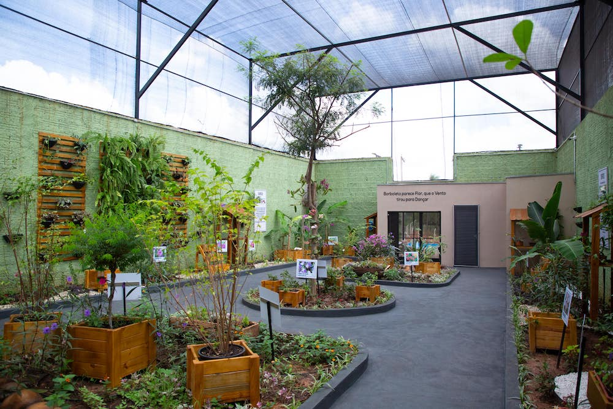
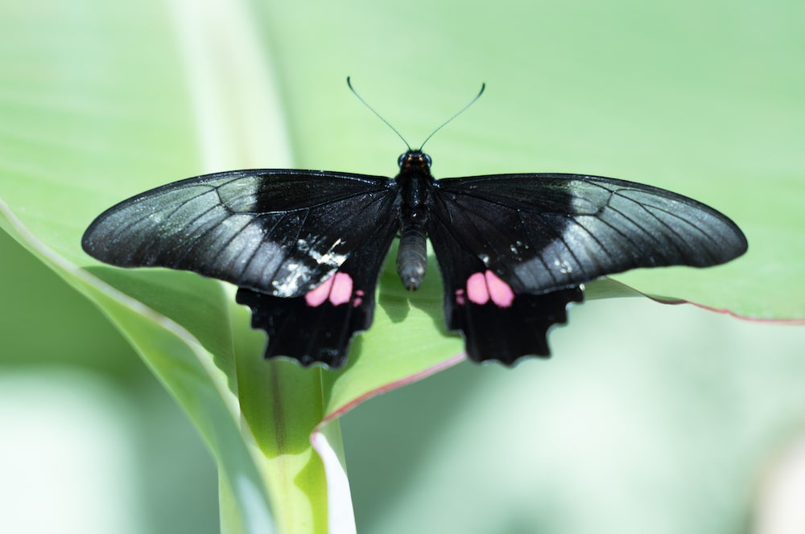

Feito em Urânia, para Urânia
A nossa cidade.
Mais perto de você.
O Eu Amo Urânia conecta moradores, visitantes e negócios por meio de informação local, boas histórias e lugares que merecem ser descobertos.
- Notícias locais
- Turismo
- Comércio e serviços
.jpg)
Encontre o que precisa
Urânia em um só lugar
Informação útil, direta e feita para o dia a dia da nossa comunidade.


Vale a visita
Conheça o Borboletário Municipal
O primeiro borboletário da Região Noroeste Paulista é um convite para aprender, contemplar a natureza e viver uma experiência diferente bem aqui em Urânia.
Inaugurado em 2022, o espaço recebe visitantes mediante agendamento.
Nossa essência
Amar Urânia também é compartilhar o que ela tem de melhor.
O Eu Amo Urânia nasceu para valorizar a cidade, dar visibilidade a quem faz parte dela e facilitar o acesso a informações que realmente importam.
Somos um ponto de encontro digital para histórias, serviços, turismo, cultura e tudo o que fortalece o sentimento de comunidade.
Faça parte
Receba Urânia no seu WhatsApp
Notícias, eventos e novidades da cidade em um canal direto e fácil de acompanhar.